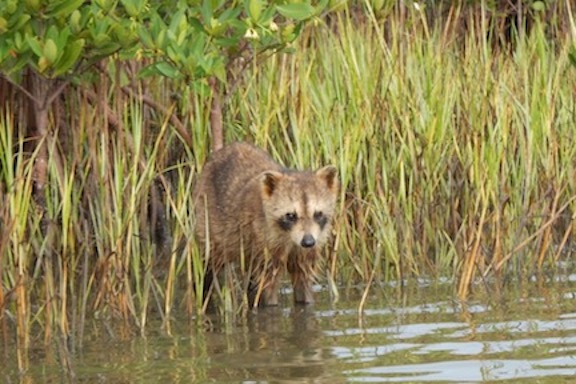
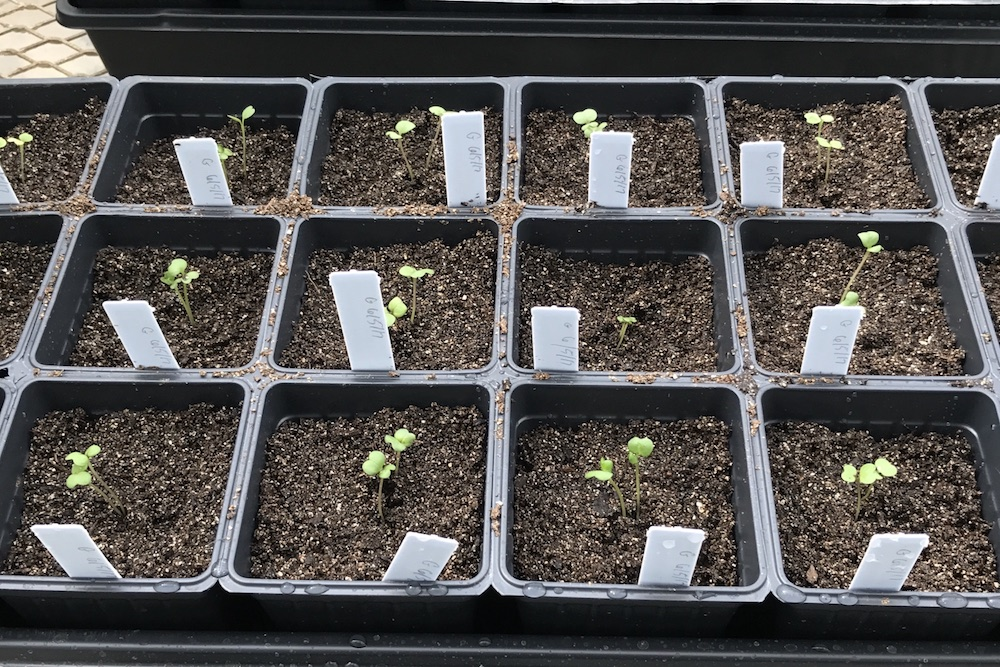

<!-- Header Section -->
<header style="background-image: url('{{ site.baseurl }}/img/bg-research.jpg'); background-size: cover; -webkit-background-size: cover; -moz-background-size: cover; -o-background-size: cover; padding: 6%;"">
         <div class="container-fluid" style="background-size: cover; -webkit-background-size: cover; -moz-background-size: cover; -o-background-size: cover; padding: 6%;">
            <div class="intro-text" align="center" style="background-size: cover; -webkit-background-size: cover; -moz-background-size: cover; -o-background-size: cover; padding: 6%; vertical-align: middle; font-size: 70px;"> Research</div>
        </div>
</header>

<!-- Services Section -->
      <!-- Services Section -->
<section id="research" class="bg-light-gray" style="padding: 80px; padding-top: 0px;">
	<div class="container">
		<div class="row">
			<div class="col-lg-12 text-center">
		    		<h4 style= "color: #000000; text-transform: none;"> My interests are broadly evolutionary botany. Through my undergraduate and graduate research experience, I have focused on population genetics, as well as polyploidy evolution and ecology.</h4>
		    </div>
		</div>
	</div>	
	
	<div class="container-fluid" style="padding-top: 15px;">
        <div class="row">
            <div class="col-xs-12 col-sm-6 col-lg-6">
                <div class="caption" style="text-align:center; font-size: 19px; line-height: 1.5; color: ##fa4616;"><a href="mgaynor1.github.io/research/populationgenetics.html">Population Genetics</a>
                </div>
            </div>
            <div class="col-xs-12 col-sm-6 col-lg-6">
                <div class="caption" style="text-align:center;font-size: 19px; line-height: 1.5; color: ##fa4616;"><a href="mgaynor1.github.io/research/polyploidy.html">Polyploidy Evolution and Ecology</a>
                </div>
            </div>   
        </div>
     </div>    
            
            
            
                	